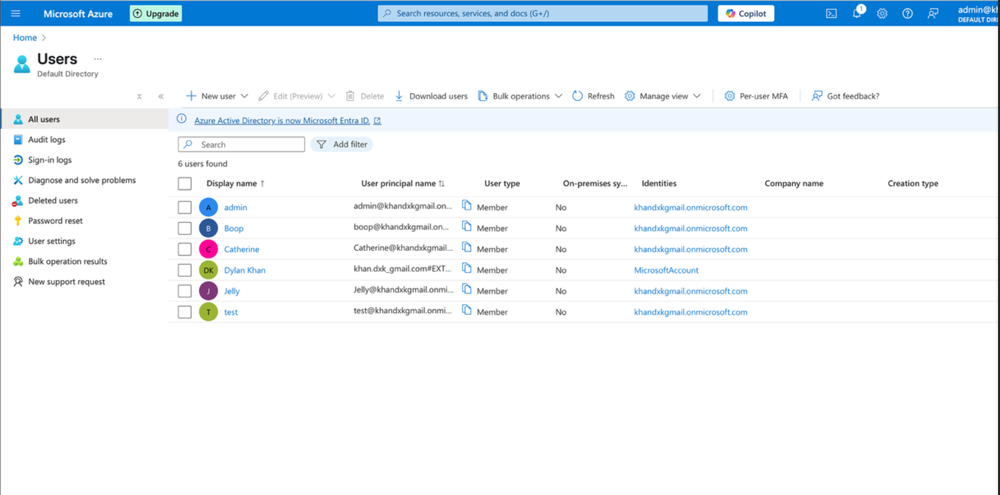
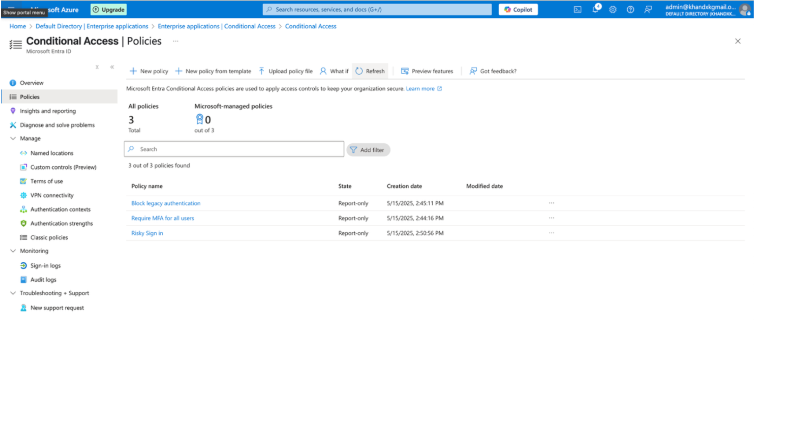

Projects
üîê Microsoft Entra ID Environment
For my Microsoft internship, I created a test environment using Entra ID to learn how to add users, create roles, and assign policies.
- Followed PurpleCloud Labs
- Created users with specified roles 
- Assigned roles to users
- Created conditional access policies such as Block legacy authentication and Enforcing MFA 
- Enforce monthly access reviews for users
- Review Audit logs of password resets, user updates, user invites, and role assignments
- Automated user add using terminal on MacOS
- Personal Theme for test environment


üñ•Ô∏è Azure Virtual Machine Deployment
Built and hardened a Windows Server VM using Azure, configured NSGs, installed monitoring agents, and set up RDP access.
- Deployed using ARM templates
- Configured endpoint protection & updates
- Monitored metrics and security logs